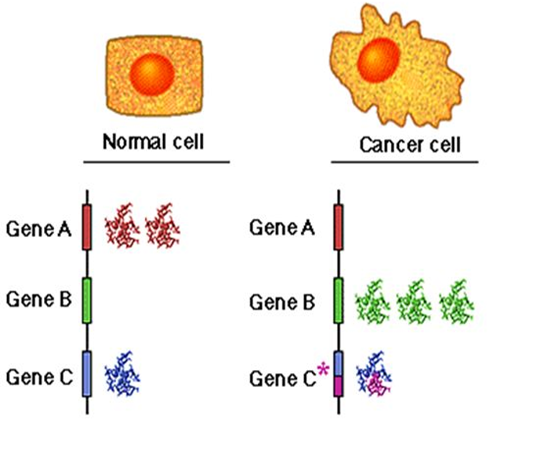
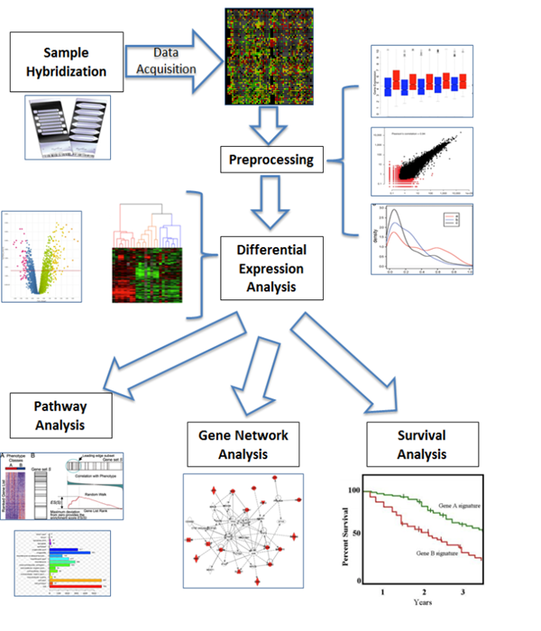
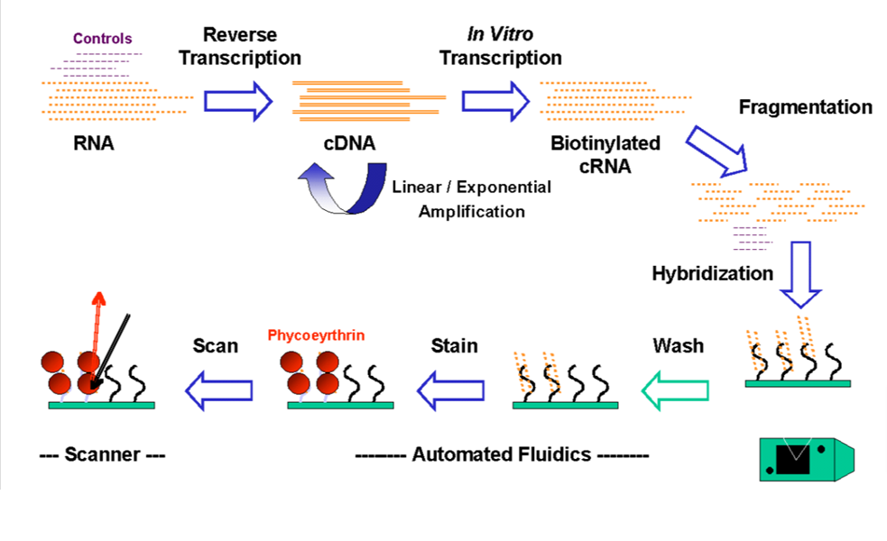
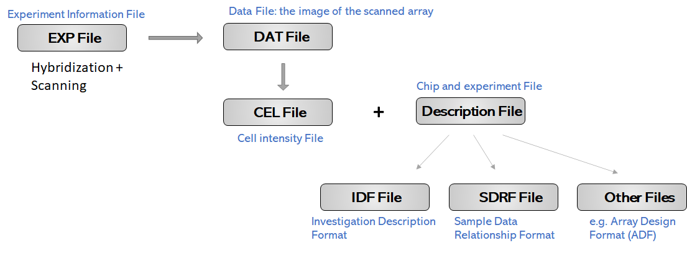
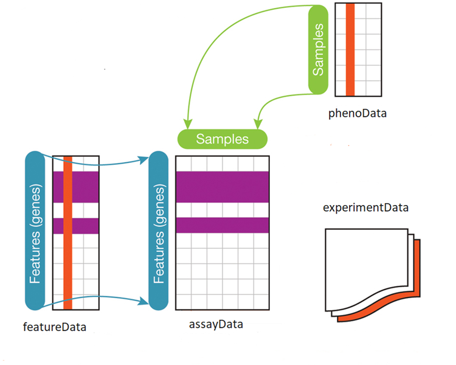
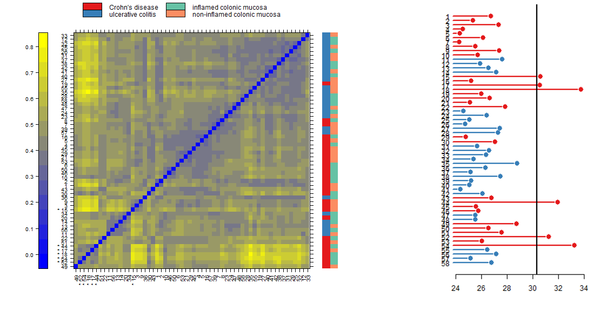
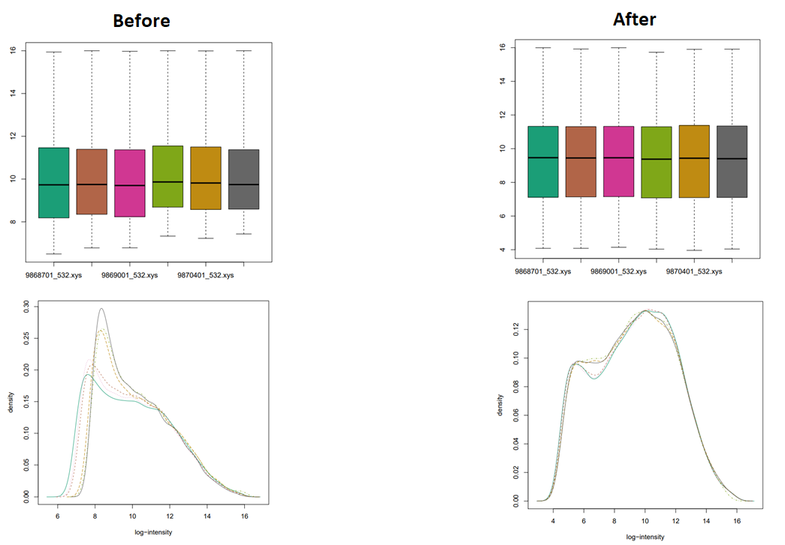
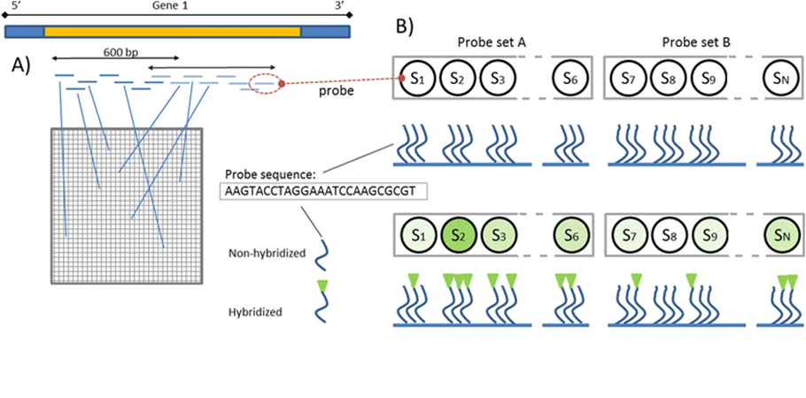
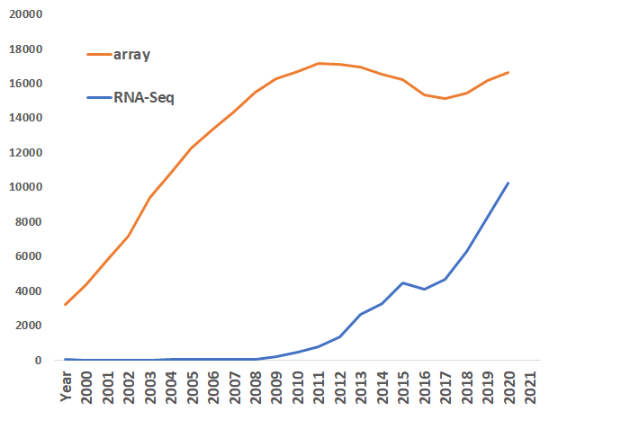

At the most general level, a microarray is a flat surface on which one molecule interacts with another. Generally, a microarray is a glass or plastic slide or a bead that has a piece of DNA or cDNA (an oligonucleotide or oligo) attached to it. For genomic resequencing, such as genotyping, the oligos will be pieces of DNA; for gene expression it would be cDNA derived from the transcripts. Location and signal produced provide characteristics about the interacting partners.
Probe-target hybridization is usually detected and quantified by detection of fluorophore-, silver-, or chemiluminescence-labeled targets to determine relative abundance of nucleic acid sequences in the target
Probe (or reporters or oligos): relatively short sequence of DNA fixed to the surface
Target: the sequence entity that we are measuring (typically labeled)
Drug discovery (e.g., identify genes that are regulated in response to drug treatment)
Splice variants (e.g., detection of different splicing isoforms, exon splicing events)
Single nucleotide polymorphisms (SNPs) (Identifying variants among alleles within or between populations)
To detect the presence of certain pathogens (e.g., check IDs of organisms in food or other matrices)
Chromatin immunoprecipitation on Chip (determination of protein binding site occupancy)
3 Quantitative measure of mRNA
3.1 Gene expression microarray
The set of expressed genes is one of the main factor determining the phenotype of a particular cell.
Gene expression microarrays are powerful tools that help scientists study cellular genetics. Researchers study gene expression by measuring the amount of RNA copies a gene produces.
The repertoire of RNA produced by cells (e.g cancer cell vs its normal counterpart) might differ significantly.
Measure of expression can be useful to
Identify genes expressed in different cell types (e.g. Liver vs Kidney)
Understand how expression levels change in different developmental stages (embryo vs adult)
Understand how expression levels change in disease development (cancerous vs non-cancerous)
Understand how groups of genes inter-relate (gene-gene interactions)
Identify cellular processes that genes participate in (structure, repair, metabolism, replication, etc)

Figure 4.1: As shown in figure, gene B is expressed at high level in cancer cell when compared to normal cell by contrast gene A is not expressed at all. An active gene producing a lot of RNA must be important for that specific cell type. Studying gene expression can help with understanding of cell function and lead to treatment of diseases.
5 Steps to analyze a gene expression microarray
Hybridization
Data Acquisition
Data-preprocessing
Differential expression analysis
Functional Annotation
Downstream analysis

Figure 5.1: Microarray workflow
6 From sample to data

Figure 6.1: Main steps for microarray preparation
7 Affymetrix Data file formats
Affymetrix GeneChips are scanned in a scanner, and the initial quantification of features is performed using associated software. The software produces numerous files.
EXP Contains basic information about the experiment.
DAT Contains the raw image.
CEL Contains features Quantifications.
IDF Contains top level information about the experiment including title, description, protocols, etc.
SDRF Contains essential information on the experimental samples, e.g. the experimental group(s) they belong to.

Figure 7.1: Main format files coming from microarray analysis
8 Bioconductor ExpressionSet
Genomic data can be very complex, usually consisting of a number of different components, e.g. information on the experimental samples, annotation of genomic features measured as well as the experimental data itself. In Bioconductor, the approach is taken that these components should be stored in a single structure to easily manage the data.

Figure 8.1: Structure of ExpressionSet class
9 Quality control of the raw data
The first step after the initial data import is the quality control of the data. Here we check for outliers and try to see whether the data clusters as expected, e.g. by the experimental conditions.
Possible source of problem:
tissue contamination
RNA degradation
amplification efficiency
reverse transcription efficiency
hybridization efficiency and specificity
clone identification and mapping
PCR yield, contamination
spotting efficiency
DNA support binding
other array manufacturing related issues
image segmentation
signal quantification

Figure 9.1: On left side: Heatmap of the distances between arrays. Patterns in this plot can indicate clustering of the arrays either because of intended biological or unintended experimental factors (batch effects). On right side: bar chart highlighting the outlier detection.
After the initial import and quality assessment, the next step in processing of microarray data is background adjustment. This is essential because a proportion of the measured probe intensities are due to non-specific hybridization and the noise in the optical detection system. Therefore, observed intensities need to be adjusted to give accurate measurements of specific hybridization.
Across-array normalization (calibration)
Normalization across arrays is needed in order to be able to compare measurements from different array hybridizations due to many obscuring sources of variation. These include different efficiencies of reverse transcription, labeling or hybridization reactions, physical problems with the arrays, reagent batch effects, and laboratory conditions.
Summarization
After normalization, summarization is necessary to be done because transcripts are generally represented by multiple probes, that are mapped in multiple locations on the array. For each gene, the background-adjusted and normalized intensities of all probes need to be summarized into one quantity that estimates an amount proportional to the amount of RNA transcript.
11 Background adjustment, calibration
11.1 Some mathematical background on normalization (calibration) and background correction.
A generic model for the value of the intensity Y of a single probe on a microarray is given by
Y = B + α · S
where B is a random quantity due to background noise, usually composed of optical effects and non-specific binding, ‘α’ is a gain factor, and ‘S’ is the amount of measured specific binding. The signal ‘S’ is considered a random variable as well and accounts for measurement error and probe effects. The measurement error is typically assumed to be multiplicative so we can write:
log(S) = θ + φ + ε
Here ‘θ’ represents the logarithm of the true abundance, ‘φ’ is a probe-specific effect, and ‘ε’ accounts for the nonspecific error. This is the additive-multiplicative-error model for microarray data used by RMA and also the vsn algorithm. The algorithms differ in the way that ‘B’ is removed and an estimate of ‘θ’ is obtained.

11.2 Summarization
The final step of pre-processing is the summarization, in which a single expression estimate is calculated for each probe-set based on the intensity of the individual probe signals. Summarization step is highly dependent on the quality of the probe and probeset definitions which are in many cases low due to inaccurate transcriptome data at the time of microarray design. This can result in probesets targeting transcripts of multiple genes due to low probe specificity, probes that do not map any of the known transcripts or multiple probesets that map the same gene (Jaksik et al., 2015)

Figure 11.1: Probes corresponding to the characteristic fragments of a given gene are placed in different locations across the array; b Single probes are arranged in sets corresponding to the same region of the gene. DNA that hybridizes to the probe can be detected using a fluorescent reporter system. Increasing the number of probes to which cDNA hybridizes correctly, increases the contrast between this probe set (probe set A) and any other probe set (probe set B). (From Jaksik et al., 2015)
12 Differential expression analysis
The goal of differential expression analysis is to identify those genes that are consistently expressed at different levels under different conditions by using statistical test (e.g. t-test, ANOVA, Mann-Whitney test,…) controlling the probability of false declaration.
An important consideration for differential expression analysis is correction for multiple testing. This is a statistical phenomenon that occurs when thousands of comparisons (e.g. the comparison of expression of multiple genes in multiple conditions) are performed for a small number of samples (most microarray experiments have less than five biological replicates per condition). This leads to an increased chance of false positive results.
Commonly used statistical methods for microarray include:
t-test. The statistical methods used to identify differentially expressed genes in the two groups are based on fold change, i.e., X(diseased) – Y (healthy) for any gene.
ANOVA. When there are more than two conditions in an experiment
Linear models. (e.g Limma). Capable of handling complex experimental designs and to test very flexible hypotheses.
Bayesian models. Flexible exploration of complex hypotheses, easy inclusion of nuisance parameters and handle missing data.
Figure 12.1: Differential expression analysis plots (heat-map and Volcano plot)
13 List of tools and software used in microarray analysis
Table 13.1: List of commonly used tools and software according to the different steps of the microarray analysis
Type
Name
Background.correction
Normalization
Summarization
DE.analysis
GeneSet.Enrichment
R Package
affy
X
X
X
affyio
X
beadarray
X
clusterProfiler
X
gcrma
X
genefilter
X
GEOquery
X
Gostat
X
limma
X
X
X
X
marray
X
X
methylumi
X
X
X
minfi
X
X
X
X
oligo
X
X
X
ReactomePA
X
siggens
X
simpleaffy
X
X
X
X
sva
X
topGO
X
vsn
X
X
X
SOFTWARE
BASE
X
X
X
Chipster
X
X
X
X
X
EzArray
X
X
X
X
Geoss
X
MARS
X
X
X
X
X
CARMAWeb
X
X
X
X
X
Mayday
X
X
X
X
X
TM4
X
X
X
LICENSE
Genedata Expressionist
X
X
X
X
X
Partek
X
X
X
X
X
GeneSpring GX
X
X
X
X
X
Geospiza
X
X
X
X
X
GenomeStudio
X
X
X
X
X
14 Why use DNA microarrays in the era of Next Generation Sequencing technology?

Figure 14.1: PubMed search results count per year for microarray (orange line) and RNA-Seq (blue line)
Microarrays
+ easier and mature
+ lower cost (100$-200$/sample)
+ yield higher throughput
– cross-hybridization
– probe design bias & probe annotations
– limited to quantify low/high expressed genes
RNA-seq
+ precise and no cross-hybridization
+ higher accuracy and wider dynamic range
+ discovery of novel transcripts
+ allele-specific expression and splice junct
– library preparation
– higher cost (300$-1000$/sample) (decreasing with new sequencing technologies)